Amazon Finds for Home Organization
Editor-tested storage solutions we genuinely recommend.
Every product featured on SpaceSavvyLiving is independently selected by our editorial team.
We spend weeks researching, comparing reviews, and analyzing data before recommending them. Our goal is simple: help you find storage solutions that actually work, at price points that make sense. We never feature a product solely because of an affiliate commission. If it doesn't earn our genuine recommendation, it doesn't make the list.

360° Rotating Countertop Spice Rack Tower (20 Glass Jars with Labels & Shaker Tops)
Solution: This 360-degree rotating revolving spice carousel holds 20 glass jars in a compact vertical footprint, allowing you to spin and grab any seasoning in one second while keeping every label clearly visible at a glance.
- 360-degree smooth revolving carousel provides instant 1-second access
- Compact vertical tower stores 20 jars using minimal countertop space
- Includes 20 reusable chalkboard labels, marker pen, and funnel for easy refilling

Expandable Bamboo Drawer Organizer
Solution: Designed with expandable side wings, this bamboo tray adjusts from 13" to 20" wide to create tailored compartments that keep utensils flat and organized.
- Expands from 13" to 20" to fit custom drawer widths
- Deep dividers prevent cutlery from mixing
- Water-resistant natural bamboo finish
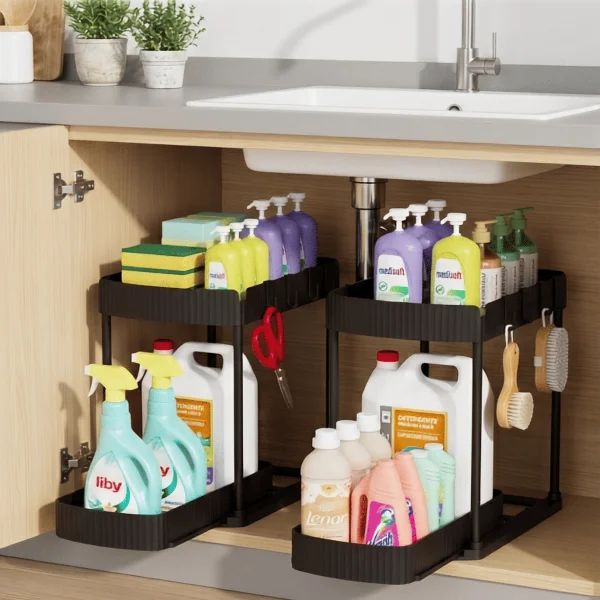
2-Tier Under Sink Sliding Organizer
Solution: Built with a slim top tier and a sliding lower drawer, this 2-tier organizer fits around plumbing lines and pulls cleaning bottles out into easy reach.
- Navigates around plumbing pipes and disposal units
- Bottom drawer pulls out smoothly for easy access
- Waterproof corrosion-resistant frame
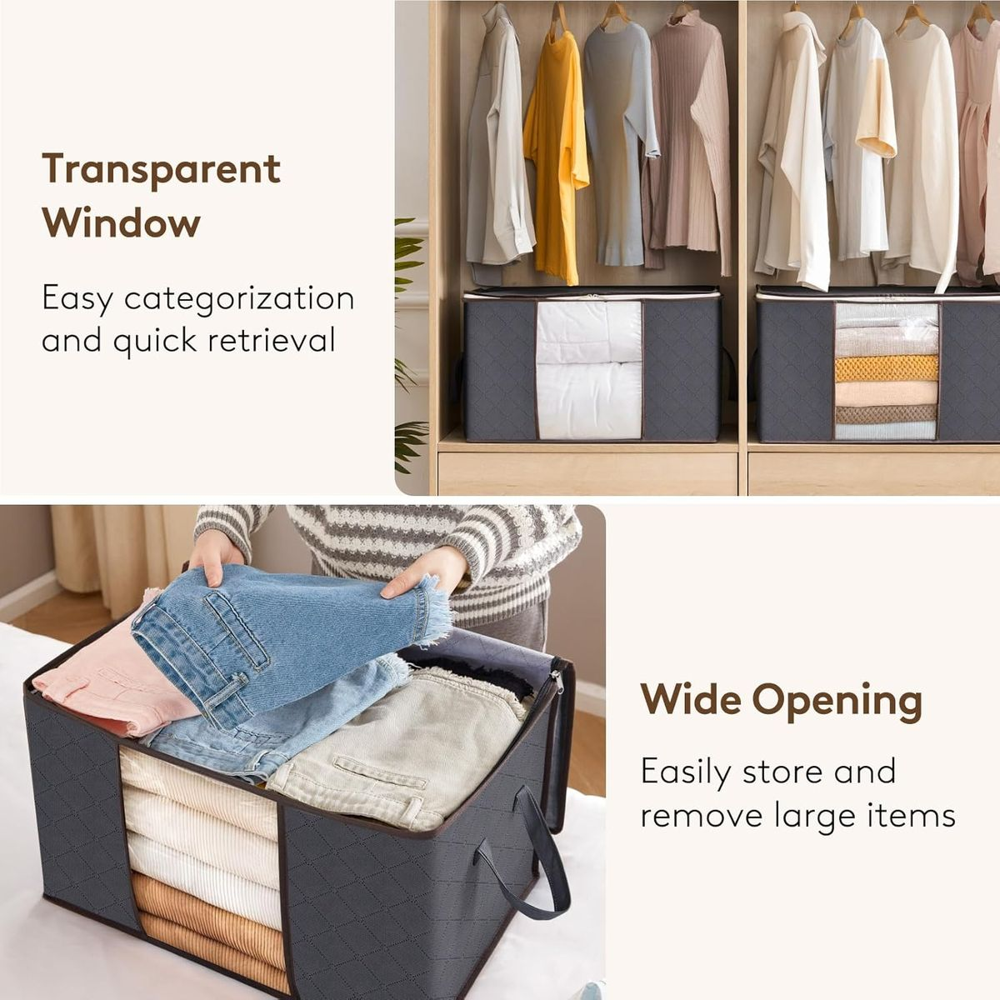
Clothes Storage Bins
Solution: Large capacity, reinforced storage bags that keep seasonal clothing and bedding perfectly organized.
- Reinforced handles for easy pulling
- Clear window to see what's inside
- Breathable fabric protects against dust

Narrow Bathroom Storage Cabinet
Solution: This ultra-slim cabinet slides into 6-inch gaps between appliances or fixtures, offering completely hidden, enclosed storage.
- Hides visual clutter behind closed doors
- Fits in ultra-narrow, wasted spaces
- Includes a built-in toilet paper dispenser

360° Rotating Makeup Organizer
Solution: A vertical, spinning carousel condenses dozens of products into a tiny footprint while keeping everything instantly accessible.
- Holds up to 30 makeup brushes and 20 bottles
- Adjustable shelves for tall and short items
- Spinning base for easy access to the back
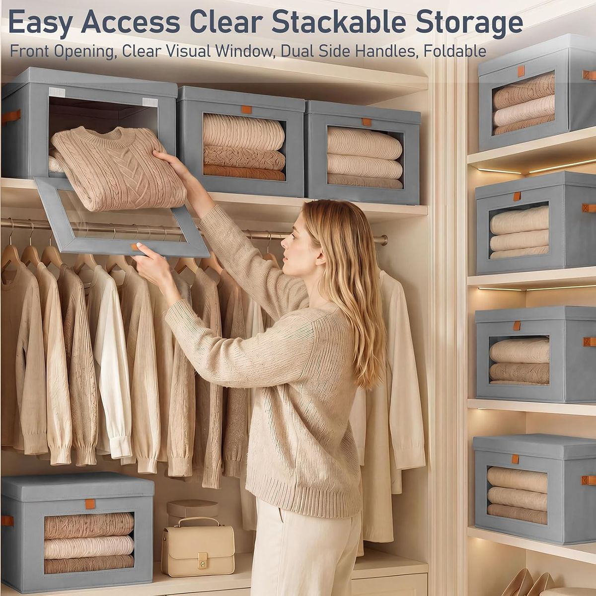
Clear Stackable Sweater Storage Bins
Solution: Clear, front-opening storage bins allow you to stack knits safely and pull out the exact sweater you want from the bottom without disturbing the pile.
- Prevents sweater stacks from toppling
- Drop-down front allows easy access
- Clear design keeps clothes visible
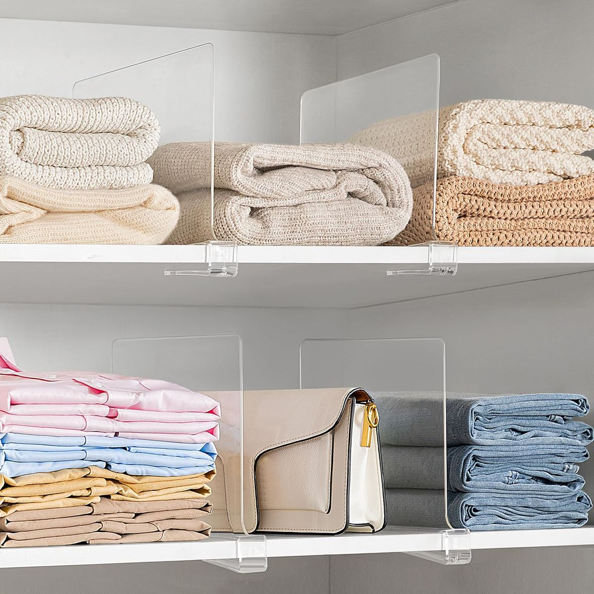
Closet Shelf Dividers
Solution: Acrylic shelf dividers slide onto wooden or wire shelves, creating firm boundaries that keep items perfectly upright and contained.
- Keeps jeans and bags perfectly upright
- Slides easily onto existing shelves
- Clear acrylic blends into any decor

Over Door Shoe Organizer
Solution: A slim over-the-door organizer holds up to 12 pairs of shoes, freeing up the bottom of your closet for hampers or drawer units.
- Gets shoe piles off the floor
- Holds up to 12 pairs of shoes comfortably
- Installs instantly over any standard door

Hanging Closet Organizer Shelves
Solution: A 5-tier fabric shelving unit hangs directly from your clothing rod, acting as a makeshift dresser for folded clothes.
- Converts hanging space into vertical shelves
- Acts as a makeshift dresser
- Folds flat when moving

Cascading Hanger Hooks
Solution: These connector hooks daisy-chain hangers vertically, multiplying hanging capacity and creating a uniform, boutique look.
- Multiplies hanging space vertically
- Keeps matching hangers perfectly uniform
- Easy to attach to existing hangers
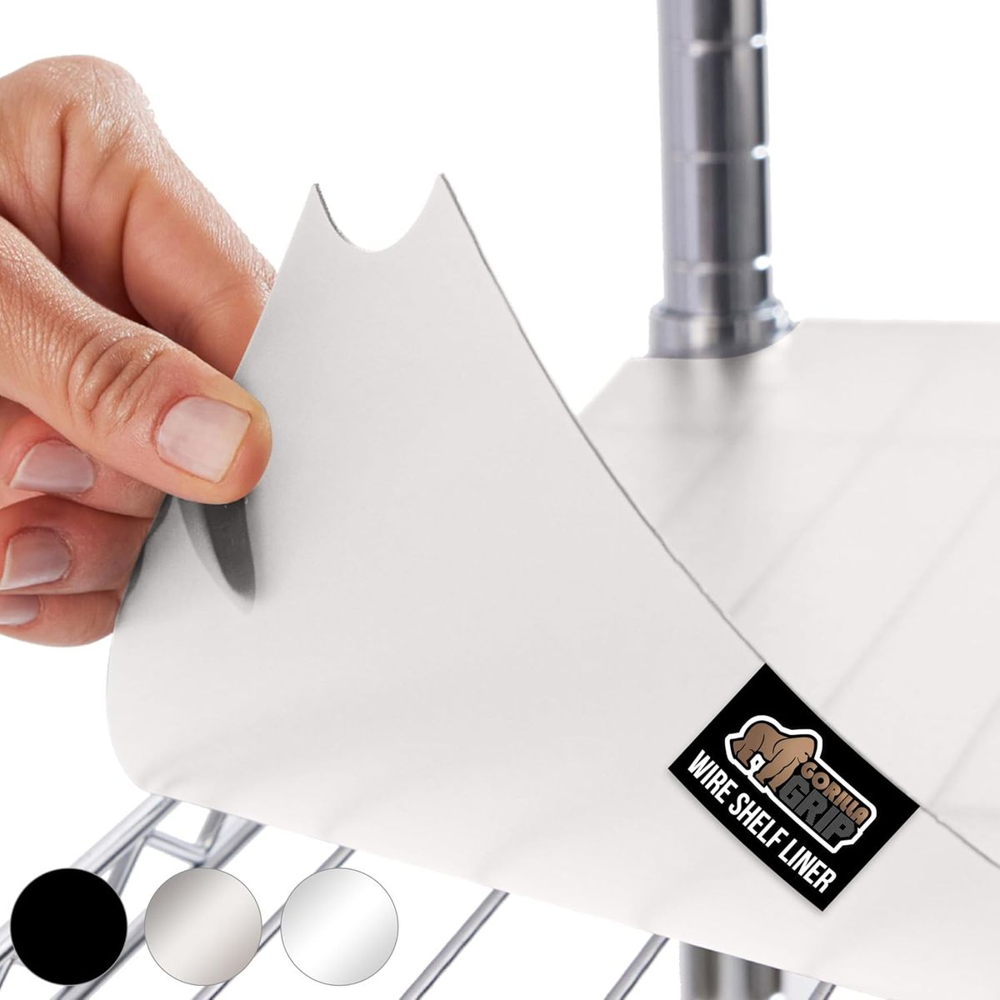
Wire Shelf Liners
Solution: These rigid, frosted liners sit on top of wire shelves, creating a smooth, solid surface that mimics custom wooden built-ins.
- Instantly upgrades the look of cheap wire shelves
- Prevents wire marks on clothing
- Heavy-duty and easy to cut to size
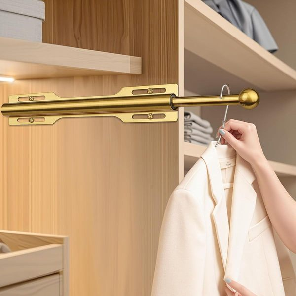
Pull-Out Closet Valet Rod
Solution: A slide-out valet rod mounts easily to your existing shelf partitions, providing a pull-out hanging zone to steam or stage clothes.
- Creates a transition zone for outfit planning
- Mounts easily to existing partitions
- Slides away cleanly when not in use

Stackable Closet Storage Basket
Solution: These woven, structured baskets hide miscellaneous items completely, maintaining a luxurious aesthetic while keeping accessories accessible.
- Hides off-season accessories cleanly
- Woven texture adds a luxurious look
- Stackable design maximizes vertical shelf space

VASAGLE 3-in-1 Coat Rack & Hall Tree with Shoe Storage Bench
Solution: This compact industrial-style unit integrates an upper coat rack with double-row hooks, a sturdy rustic brown seating bench, and two lower wire mesh shoe shelves in one unified vertical frame.
- Combines hanging hooks, sturdy bench seating, and 2 shoe racks in a slim vertical profile
- Black steel frame with rustic brown engineered wood panels and leveling feet
- Two rows of sturdy metal hooks provide dedicated hanging space for coats, hats, and daily bags

Slim shoe rack for entryway
Solution: This 8-tier metal rack holds up to 30 pairs of shoes without eating up precious square footage.
- 8-tier vertical design with lockable wheels
- Holds up to 30 pairs of shoes
- Double-sided vinyl mesh shelves

Slim Metal Umbrella Stand
Solution: A modern, metal stand with a drip tray to keep your floors dry and umbrellas contained.
- Includes a removable drip tray
- 6.1" square footprint fits perfectly in tight corners
- Includes 4 hooks for folding umbrellas

Decorative Key Holder & Mail Organizer
Solution: This stylish wall organizer catches mail immediately and provides dedicated hooks for every set of keys.
- Features 6 sturdy hooks and a compact drawer
- Crafted from high-quality Paulownia wood
- Supports up to 100 lbs

Entryway Shoe Storage Bench
Solution: A sturdy bamboo bench that provides comfortable seating on top and open shelving below for daily shoes.
- 100% natural, eco-friendly bamboo
- 3 tiers of open storage
- Engineered to support up to 300 lbs

Wall-Mounted Coat Rack with Shelf
Solution: A wall-mounted rack with strong hooks for heavy coats and a top shelf for decor or hats.
- Set of two rustic brown floating shelves
- Features 8 high-strength iron hooks
- Top shelf for photo frames or small plants

Adjustable Food Container Lid Organizer Tray
Solution: Equipped with adjustable divider slots, this tray holds round and square food container lids upright in neat rows for instant 1-second retrieval.
- Includes 5 customizable dividers for different lid sizes
- Keeps up to 30 lids neatly aligned in one compact spot
- Fits standard kitchen cabinet shelves and deep drawers

Stackable Clear Refrigerator Organizer Bins
Solution: These transparent BPA-free acrylic bins create clear pull-out drawers on fridge shelves, making contents instantly visible and easy to restock.
- BPA-free shatter-resistant transparent acrylic
- Stackable design doubles vertical shelf space
- Built-in handles for easy pulling and cleaning
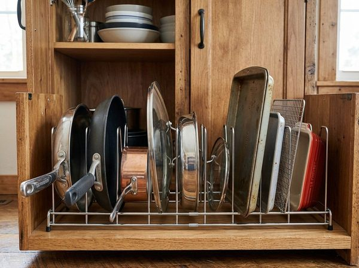
Expandable Pot Lid & Baking Sheet Divider Rack
Solution: With adjustable metal wire dividers, this rack stores baking sheets, cutting boards, and pot lids vertically so you can grab any pan without disturbing others.
- Adjustable dividers fit thin baking sheets and thick frying pans
- Non-slip feet prevent rack from sliding inside cabinets
- Allows 1-second grab-and-go access to any tray
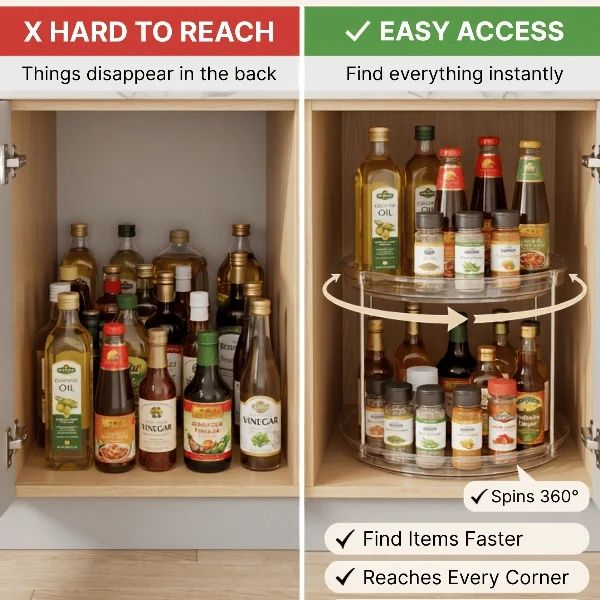
LAMU 360° Rotating Pantry Lazy Susan Turntable
- Smooth 360° rotation brings dark back-corner bottles forward
- Raised non-skid outer rim prevents jars from tipping off
- Clear transparent design keeps item labels 100% visible
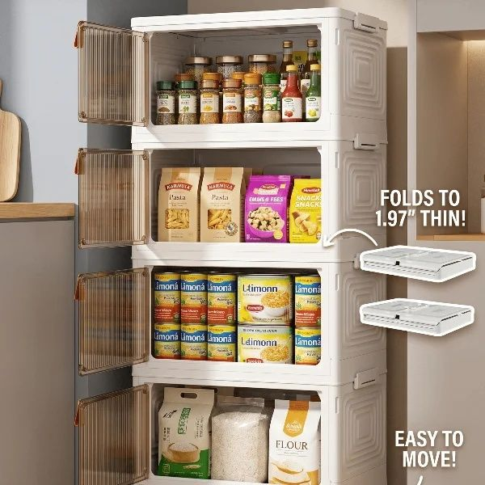
Stackable Collapsible Pantry Storage Bins with Front Doors
- Front-opening doors allow item access while bins remain stacked
- Clear shatter-resistant transparent plastic for instant inventory views
- Collapsible 4-tier design folds to 1.97" thin when not in use
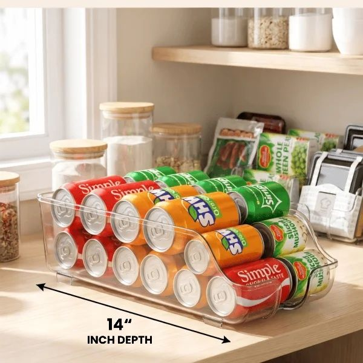
SimpleHouseware 2-Tier Clear Can Dispenser Organizer Bin
- Holds up to 12 standard cans in a compact 14" depth
- 2-tier gravity-roll design automatically moves upper cans down
- Clear BPA-free shatter-resistant plastic for 100% visibility

AmonHouseware Under-Shelf Wire Storage Basket
Solution: Featuring padded slip-on arms that slide directly onto existing shelves, this wire basket adds a suspended lower level for aluminum foil boxes, snack bars, and tea boxes.
- Slides onto shelves up to 1.3" thick with zero tools or drilling
- Utilizes empty vertical air beneath pantry shelves
- Durable steel wire construction holding up to 10 lbs
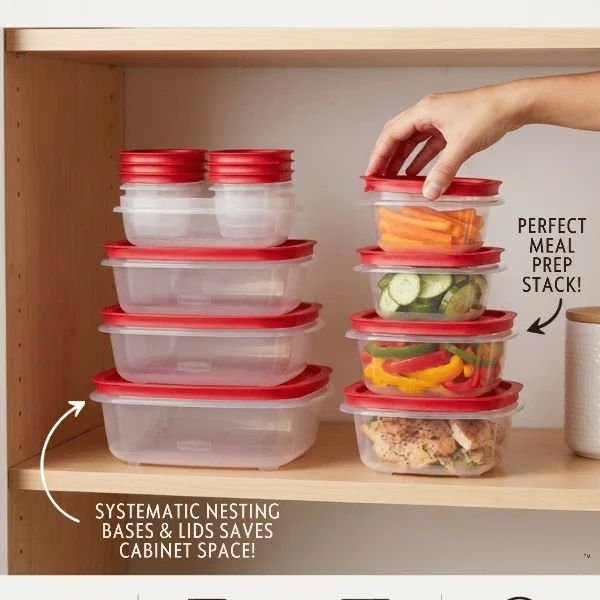
Rubbermaid Leakproof Airtight Food Storage Container Set
Solution: Engineered with 100% airtight latching lids and crystal-clear BPA-free walls, these stackable containers seal out humidity and pests while stacking neatly to maximize shelf space.
- 100% airtight and leakproof locking latch lids
- Crystal-clear BPA-free shatter-resistant construction
- Modular stackable design eliminates wasted vertical height

Over-the-Door Hanging Organizer
Solution: A high-capacity hanging organizer with multiple sturdy pockets that turns any door into a storage wall.
- Large capacity pockets hold heavy bottles
- Clear windows to easily see contents
- Requires zero tools or drilling to install

Vacuum Storage Bags
Solution: High-compression vacuum bags that shrink your blankets and sweaters to create 80% more space.
- Includes a hand pump for easy travel use
- Double-zip seal prevents air leakage
- Protects items from dust and moisture
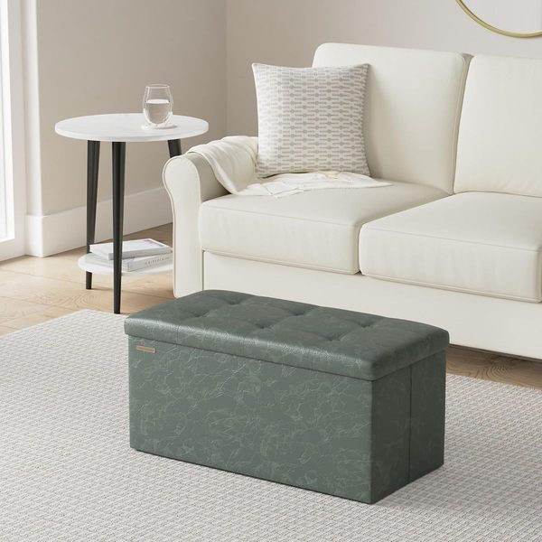
Folding Storage Ottoman Bench
Solution: A stylish, sturdy ottoman that doubles as seating and a massive hidden storage trunk.
- Supports up to 660 lbs of static weight
- Spacious 120L capacity
- Folds flat when not in use
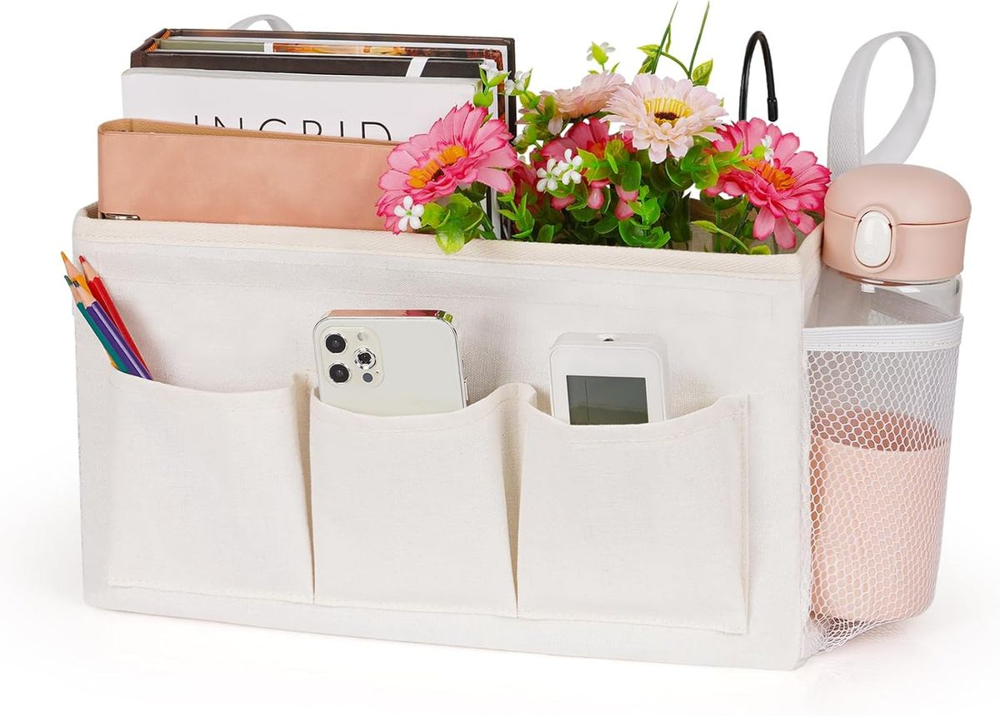
Bedside Caddy Organizer
Solution: A felt organizer that slips under your mattress to hold books, tablets, and remotes securely.
- Thick, durable felt material
- Multiple pockets including a deep main compartment
- Keeps essentials within arm's reach

Magnetic Washer & Dryer Shelf
- Features ultra-strong magnets to stay secure during spin cycles
- Designed with a raised lip to prevent items from falling behind machines
- Instantly adds usable counter space to the top of your washer

Clothing Rack with Storage Mesh Shelf
- Heavy-duty metal construction supports thick, wet garments
- Features a bottom storage shelf perfect for laundry baskets
- Equipped with smooth-rolling casters for easy mobility

Laundry Hamper Sorter Cart
- Includes 3 removable bags to effortlessly pre-sort lights, darks, and delicates
- Each bag features dual handles for easy lifting and carrying
- Heavy-duty locking castors glide smoothly across any floor type

Wall Mounted Ironing Board Holder
- Compact wall-mounted design gets your ironing board entirely off the floor
- Made of heat-resistant steel to safely store a hot iron
- Includes over-the-door hooks and wall-mounting hardware

Wall-Mounted Folding Drying Rack
- Collapsible accordion design keeps your floor completely clear
- Pushes entirely flat against the wall when not in use
- Durable aluminum construction handles heavy, wet garments with ease

Slim Rolling Laundry Cart
- Ultra-slim profile slides perfectly into tight 5-inch gaps
- Features multiple tiers to organize all your detergents and stain removers
- Built with smooth-gliding wheels and a sturdy handle for easy pull-out

Laundry Detergent Dispenser Set
- Uniform containers drastically reduce visual clutter from ugly plastic jugs
- Precision pump mechanism prevents messy drips and sticky spills
- Transparent design ensures you always know when it's time to refill
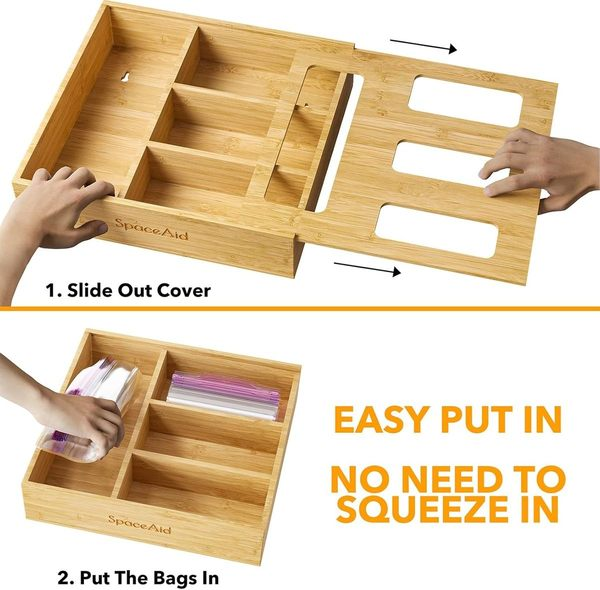
SpaceAid Bamboo Food Storage Bag Organizer
Solution: Crafted with 4 dedicated laser-engraved slots, this natural bamboo organizer keeps Gallon, Quart, Sandwich, and Snack bags neatly separated for smooth pull-out access.
- 4 dedicated engraved slots for Gallon, Quart, Sandwich, and Snack bags
- Fits inside drawers or mounts to pantry walls with included hardware
- Crafted from durable 100% natural water-resistant bamboo
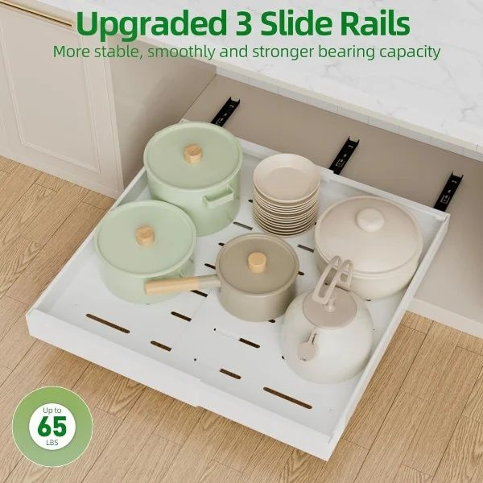
PAKETA Expandable Sliding Cabinet Drawer Organizer
Solution: Fixed with heavy-duty Adhesive Nano Film, this expandable carbon steel shelf glides 100% forward without drilling into rental cabinets, bringing back-row items directly to you.
- Adhesive Nano Film installation — 100% renter friendly with zero screws
- Expandable width adjusts to fit custom deep pantry cabinets
- Heavy-duty carbon steel frame glides forward smoothly

Sofa Arm Organizer
Solution: A non-slip caddy that drapes over your couch arm to hold remotes, phones, magazines, and glasses.
- Multiple pockets for organization
- Non-slip design stays firmly in place
- Frees up coffee table space completely

Under Bed Storage Containers
Solution: Low-profile storage bags with sturdy handles that turn the floor under your bed into a hidden closet.
- Low-profile design fits under almost any bed
- Clear top cover for easy visibility
- Reinforced handles for smooth sliding

Bathroom Towel Ladder
Solution: A renter-friendly leaning ladder adds vertical storage that feels like an intentional design choice, mimicking a luxury spa aesthetic while keeping towels perfectly spaced for airflow.
- Zero drilling or installation required
- Maximizes unused vertical wall space
- Allows towels to dry faster

Bathroom Drawer Organizer Trays
Solution: Modular, clear plastic trays create strict boundaries for categories, acting like a bento box for your bathroom essentials.
- Modular design fits any drawer size
- Clear plastic keeps items visible
- Prevents items from shifting

Slim Toilet Paper Holder Stand
Solution: A narrow, freestanding holder utilizes the awkward gap beside the toilet, keeping extra rolls hidden but exactly where they are needed most.
- Fits seamlessly into narrow gaps
- Stores multiple backup rolls discretely
- Freestanding so no drilling needed

Over-The-Toilet Storage Rack
Solution: An over-the-toilet shelving unit straddles the tank, providing three tiers of sturdy, open shelving that transforms dead space into a major storage hub.
- Adds massive vertical storage
- Perfect for towels and decorative baskets
- Sturdy, wobble-free design

Adhesive Shower Caddy
Solution: These rust-proof stainless steel baskets attach via heavy-duty, waterproof adhesive, lifting bottles off the ledge and allowing them to drain properly.
- Heavy-duty adhesive holds massive weight
- Zero drilling required (perfect for rentals)
- Rust-proof stainless steel design

Slim Rolling Bathroom Cart
Solution: A multi-tiered rolling cart can be pulled out when getting ready and tucked back into a narrow alcove or closet when guests arrive.
- Wheels smoothly for flexible placement
- Tall sides prevent items from falling
- Highly versatile for any room
Over-The-Toilet Storage Rack
Solution: A freestanding, 3-tier rack that straddles the toilet tank adds instant shelving without needing a drill.
- Zero tools required for wall mounting
- Includes toilet paper holder and towel hooks
- Adjustable feet for uneven tile floors

Stackable Water Bottle Storage Organizer Rack
Solution: This clear acrylic rack cradles bottles horizontally in curved slots, allowing you to stack up to 9 bottles vertically without them rolling.
- Stores 3 bottles per tier, stackable up to 3 high (9 bottles total)
- Curved slots prevent bottles from rolling
- Clear shatter-resistant design fits cabinets and fridges

Stainless Steel Kitchen Countertop Sink Caddy Organizer
Solution: Built with an angled drainage spout, this compact sink caddy holds soap dispensers and sponges while channeling excess water straight into the sink.
- Auto-draining spout directs water directly into the sink
- Separate tall compartment holds scrub brushes upright
- Rustproof stainless steel frame with non-slip rubber feet
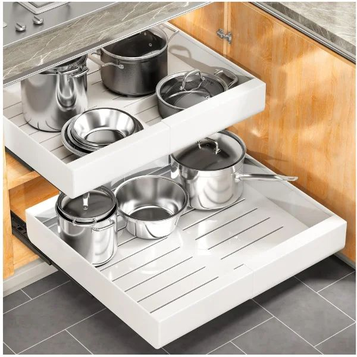
Heavy-Duty Sliding Pull Out Cabinet Organizer
Solution: Featuring commercial-grade ball-bearing glides, this steel sliding rack attaches to cabinet bases and extends 100% forward for effortless access to heavy cookware.
- Holds up to 50 lbs of heavy pots, pans, and appliances
- Full-extension ball-bearing slides bring items forward
- Easy screw-in installation for cabinet bases
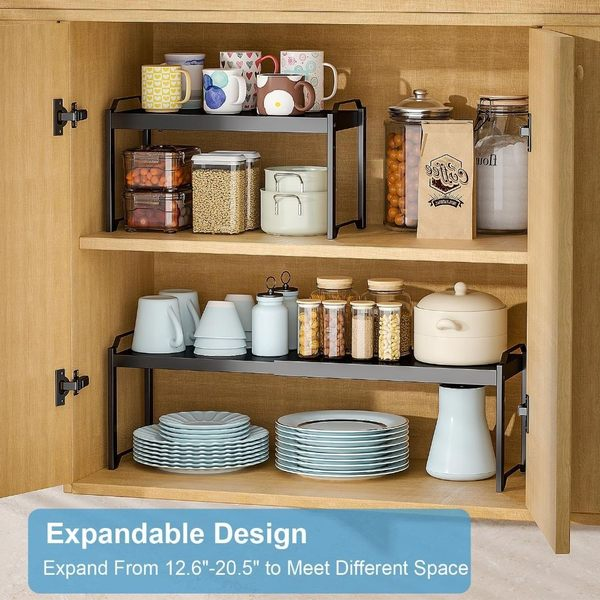
Expandable Cabinet Shelf Riser
Solution: Adjusting from 12.6" to 20.5" in width, this sturdy metal shelf riser inserts a solid middle platform that doubles your usable shelf space.
- Expands from 12.6" to 20.5" width to fit custom cabinet spaces
- Solid flat steel platform prevents small mugs and jars from tipping
- Doubles usable vertical shelf capacity instantly

Magnetic Refrigerator Spice Rack Organizer
Solution: Backed by ultra-strong magnets that hold up to 8 lbs, these shelves stick securely to the side of any refrigerator with zero drilling or permanent installation.
- Ultra-strong magnetic backing holds up to 8 lbs securely
- 100% renter-friendly with zero drilling or adhesives required
- Includes hanging hooks for dish towels and oven mitts

Expandable Kitchen Drawer Organizer Tray
Solution: Featuring a secure side locking buckle, this expandable black tray adjusts from 8.5" to 14.1" wide to keep utensils separated and firmly locked in place.
- Expands from 8.5" to 14.1" width to fit various drawer sizes
- Secure side buckle design keeps expanded wings firmly locked
- Deep multi-compartment slots sort cutlery, spatulas, and kitchen tools
Are you 18-24 or a Student? Get 6 Months of Prime for $0!
Limited Time Offer (Ends Oct 9): Enjoy fast, free shipping on your organization essentials, plus unlimited streaming, $0 food delivery (Grubhub+), fuel savings, Prime Reading, and Amazon Photos. Claim your 6-month free trial of Prime for Young Adults today.
Try Prime for Free →Affiliate Disclosure: SpaceSavvyLiving is a participant in the Amazon Services LLC Associates Program. When you purchase through links on this page, we may earn a small commission at no additional cost to you. This helps support our editorial work and keeps our recommendations free. Learn more.